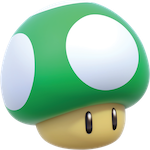

승연에 대해 알고 싶다면
약력을 살펴 보자. 그리고 승연은
우진과 대화를 나누었다. 누군가와의 대화를 다시 읽어 보듯, 모바일 환경에서 천천히 엄지를 쓸며 읽기를 추천한다. 승연은 혼잣말을 할 때에 반말과 존댓말을 섞어 쓰며, 이런 말투로 일기도 쓴다.
첫 번째 질문입니다. 간단한 본인 소개와 근황을 들려 주세요. 요즘 어떻게 지내고 있나요?

홍익대학교에서 시각디자인을 전공하고 있는 스물셋, 권승연. 부드럽고 따듯하고 말랑한 대상을 좋아한다. 잠을 많이 잘 수 없지만 이상적이라고 느껴지는 일정에 스트레스를 받으며 지내고 있다. 으하하. (자아충돌 중)
두 번째 질문입니다. 농구는 언제부터 시작했으며 시작의 계기는 무엇인가요?
초등학교 때였나? 네 명의 친구들과 농구를 잠시 배웠다. 아마 그 즈음부터 좋아한 게 아닐지. 중학교 때는 운이 좋게도 농구를 좋아하는 친구들과 친해졌다. 또 아버지께서 농구를 좋아하시는 덕에 어렸을 때부터 농구를 한 것 같다. 주변에 농구를 함께할 사람들이 있었고, 다니던 초등학교의 코트도 좋았다. 환경이 갖춰진 덕에 재미를 붙일 수 있던 게 아닐지? 농구를 처음 시작한 명확한 계기가 생각나진 않는다.
세 번째 질문입니다. 동아리는 언제부터 활동했으며, 가입한 이유는 무엇인가요?
2022년 2학기, 그러니까 이번 학기에 가입했다. 가입한 이유는... 여러 가지가 있는데. 우선 첫 번째는, 더 늦으면 동아리 활동을 못 할 것 같은데, 졸업 전에 중앙 동아리 하나는 해보고 싶었다. 두 번째는, 중학교 때부터 농구를 같이 한 여자 친구가 농구 동아리 활동을 너무 재미있게 하더라. 나도 농구를 같이 할 사람들이 생기면 좋겠고, 정기적으로 농구를 하고 싶었다. 그리고 세 번째는 그냥 농구를 하고 싶어서. 입시가 끝난 시점부터 농구를 하고 싶어서 여기저기 같이 할 사람과 조직을 찾아 봤었는데, 이런저런 이유로 하지 못했다. (코로나라든가. 코로나라든가! 코로나라든가!!) 드디어 학교를 좀 나가기 시작하고 동아리도 활동을 하기 시작한 것 같아서, 3학년 2학기라는 늦은 타이밍이지만 가입을 신청했다. 사실 너무 오래 쉬어서 안 붙여줄 줄 알았음. 감사합니다...
네 번째 질문입니다. 당신의 전공에 대한 애정과 이야기가 궁금합니다. 당신이 경험한 프로젝트 중 가장 좋아하는 프로젝트를 소개해주세요.
웹에 대해 아무것도 모를 때 만들어 온, 피지컬 워크숍 첫 수업
자기소개 과제를 가져와 보죠. 하하. 저에 대한 핵심을 소개하고 있거든요. 아무튼, 이 웹에서 ‘대체부호의 문제점과 해결방안’이라는 구자은 선생님과 석재원 선생님의 논문을 소개했었다. 나는 글자(말하자면 글리프. )를 좋아하는 사람이다. 그리고 가장 좋아하는 프로젝트라면... 흠. 이번 여름방학에 김이홍 아키텍츠에서 경험한 것 같다. 특정 집단에 잠시 속하면서 그 사람들을 이해하고 그들만을 위한 시스템을 설계하는 일이 재미있었다. 물론 그 안에서 윤고딕과 Avenir를 쓴 점도 좋았다.
다섯 번째 질문입니다. 당신이 가장 좋아하는 버섯을 고르고 설명해주세요.
마리오 시리즈에 등장하는, 먹으면 생명이 한 개 up되는 1-up kinoko. 현재 여러 가지 대화 매체(카카오톡, 페이스북, 피그마)에서 사용 중인 프로필 사진이기도 하다. 2021년 12월 27일부터 초록버섯을 자처했다. 원인은 나의 초록색 모자인데... ‘준희’라는 친구가 내가 이 모자를 쓴 사진을 보고 원업키노코를 닮았다고 했다. 이후 초록색 버섯으로서의 정체성을 만들어 가는 중. 덕분에 웹사이트와 작업 계정의 시작이 더욱 재미있다. 땡큐 준희.
아. 그리고 내가 원업키노코를 프로필 사진으로 등록하니, 주변 친구들이 따라서 버섯 프로필 사진을 등록하기 시작했다. 그렇게 버섯 마을을 이루었다는... 귀여운 친구들 이야기... 제 친구들이 이렇게나 귀엽습니다. 진경이는 1년이 되어 가는 지금까지도 대왕버섯이다.
우진이 만들어준 여섯 번째 질문입니다. 가장 좋아하는 볼펜 심 굵기는 뭔가요?
제트스트림 블랙이라면 0.7 또는 0.5. 우진과 마찬가지로 부드러운 필기감을 좋아하지만 내 글씨체에는 얇고 또렷한 선이 어울린다고 생각한다. 대충대충 쓸 때는 0.7을 선호하지만 예쁘게 신경써서 써야 할 때는 0.5를 쓰는 것 같다. 근데 종이에 따라서도 달라짐. (괜히 이 사람 필통이 터질 것같이 두툼한 게 아니다.)
일곱 번째 질문입니다. 평소 일상을 어떻게 보내나요? 무엇을 하며 하루를 보내는지 들려 주세요.
요즘은 팀프로젝트로 인해 익스트림한(?) 일정을 보내고 있다. 계획한 대로 흘러가지 않는 일정이 대다수... 덕분에 아주 괴로워하고 있는데. 규칙과 계획이 깨지는 걸 정말 힘들어하는 사람이라. 그나마 규칙적인 일정을 말해 보자면...
일요일, 월요일엔 디자인리서치 회의를 사실상 하루종일 한다. 월요일은 공강임에도 매번 학교에 온다. 공강을 괜히 만들었단 생각을 매주 한다. 화요일이 되는 자정까지 홍문관에서 디자인리서치 과제를 하고 집에 간다. 화요일에는 드디어 잠을 좀 자고 13시에 등교한다. 수업을 듣고 다른 과제를 하다 집에 간다. 수요일은 10시부터 디자인리서치 회의가 있어 일찍 등교하고, 16시가 되면 수업을 듣는다. 19시에 수업이 끝나면 3기실에 가서 과제를 하고 집에 간다. 목요일은 10시부터 계속 수업이 있어
체리 옷을 입고 등교하고... 저녁에 소모임 회의까지 하고 3기실에서 과제하다 집에 간다. 이때 종종 서울에 사는
혈육의 집에서 자기도 한다. 금요일에 2호선을 타고 등교하는 것이 경의중앙선을 타는 것보다 훨씬 널널해서 좋더라구. 아무튼 17시까지 쭉 수업을 듣고 저녁에 스터디를 하고 집에 간다. (이번 주가 스터디 마지막 날이다! 와호!) 아무튼 홍문관 지박령이 될 것 같다.
아, 토요일을 안 적었네. 토요일엔 기업적디자인스튜디오 회의를 하거나 디자인리서치 회의를 한다. 회의 시간이랑 안 겹치거나 회의가 수월하고(?) 널널한 편이라면 농구 동아리를 하러 간다. 학기 중에 운동을 많이 못해서 슬픈... 암장도 가고 싶어서 가끔 시간을 만들어 다녀온다.
여덟 번째 질문입니다. 남은 2022년 안에 꼭 하고 싶은 일이 있다면 무엇인가요?
음... 종강하기? 하하. 2023년 계획 세우기? 거창한 걸 말하고 싶은데 작은 것밖에 생각이 안 난다. 예은언니랑 마시메로 구워 먹기... 이런 거... (승연은 마시멜로보다 마시메로라고 쓰고 발음하길 선호한다. 발음이 마음에 들기 때문에.) 일단 종강은 꼭 하면 좋겠다. 휴학하고 할 일도 정해지면 좋겠으나... 그건 너무 큰 꿈인 것 같고.
눈사람도 만들고 싶다. 그러려면 눈이 잔뜩 내려야하겠지만 말이다. 그러니 이 웹사이트를 근사하게 단장하는 것을 목표로 삼아 보자. 눈이 하늘에서 안 내린다면, 또는 내릴 때까지 기다려야 한다면, 내가 웹사이트에 눈이 내리게 하면 되지, 뭐. 그러고 눈사람도 빚지, 뭐.
아홉 번째 질문입니다. 2023년의 목표는 무엇인가요? 조금 이른 새해 다짐을 생각해보자면?
인턴, 작업계정 활성화, 여행. 여행을 마음 놓고 가기 위해 돈을 벌고 싶다. 디자인을 하는 다양한 조직을 경험하고 싶기 때문에 인턴도 하고 싶다. 그리고 이 일들을 기록하고 싶다. 이것들은 휴학을 해야만 가능한 일들인 듯하다. 특히 인턴은... 이 3가지는 전부 나의 휴학이 전제된 일들이다. 그러니 가장 큰 2023년의 목표는 휴학!!
마지막으로 좋아하는 색의 hex code를 알려주세요.
문득 깨달은, 나의 인스타그램 피드에 물든 하늘색. 2022년부터 달이 끝나는 날마다 게시물을 업로드하고 있는데, 어느 날 보니 썸네일들이 전부 하늘하늘~하더라고. 하늘색을 좋아한다는 사실을 이제서야 알았다.
이어서 우진과 승연의 대화를 읽고 싶다면...
처음의 방으로 돌아가고 싶다면...